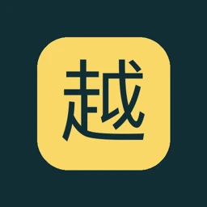

RESEARCH & DECISIONS
RESEARCH & DECISIONS研发工具可在线浏览
LumiPilot
照明研发与采购决策工作台
连接市场资料、国家认证、光学验证与工程成本，让研发决策有据可查。
无需安装或登录 · 公开资料与已保存分析
项目详情
—已保存研发项目
—市场资料记录
—品牌与企业条目
读取本次发布资料…
SELECTED WORK / DC WEB
照明工程、研发决策与交互应用。
04个项目
RESEARCH & DECISIONS照明研发与采购决策工作台
连接市场资料、国家认证、光学验证与工程成本，让研发决策有据可查。
无需安装或登录 · 公开资料与已保存分析
读取本次发布资料…
Outdoor
Lighting.
Outdoor Lighting · 户外照明展示
从企业背景到户外灯具与工程案例，浏览产品系列及不同应用场景。
账号密码登录 · 在新窗口打开
 LIGHT IN SPACE
LIGHT IN SPACE照明场景演示与 IES 分析系统
在三维空间中排布灯具、调整灯光，探索 IES 照度分析与模拟智能控制。
仅供在线演示 · 无需安装 · 不提供应用下载

VIETNAMESE QUEST没有找到匹配的项目
试试其他关键词，或查看全部项目。
本作品集汇集现有项目入口。LumiPilot 沿用现有工作台界面，发布当前已保存资料的只读版本；页面保留概念模型、历史记录与待核验资料的标记，发布时点不改变原始价格和法规来源日期。实时采集、上传、业务保存和账号审批需要完整后端服务。TOSPO 户外照明展示由独立网站提供，需使用网站账号和密码登录。请在具体项目内核对来源、适用范围及工程验证状态。